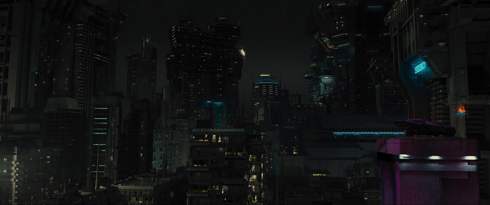

19/04/2049
Los Angeles is a city in the Free State of California. It is located in the west coast of the United States. As of the year 2020 it is said to have around 18 million inhabitants across its many boroughs, and in 2021 was voted "the best place to live in America". By the year 2049 over 106 million people now reside in the city.
The business of Los Angeles is technical, light industry, international trade, information services, electronic technologies, security services, and so on. While cities like Tokyo, New York, or Singapore have been overrun by corporations by the 2020s, Los Angeles is the only city in the world that was built from the Corporations. Some of the biggest Megacorporations in the world contributed to the construction of the city and many are located in the Corporate Center.

Los Angeles City is a fun place to visit, as well as an exciting and vibrant place to live, maybe not to grow up; it's world famous slogan is "The City on the Edge of Tomorrow" the city host around 39 million tourists, conventioneers, and corporate travelers per year. A planned city community with an advance rapid transit system, its own Net LDL, and a Corporate Center boasting representatives from over dozens of the worlds greatest corporations. Technology Triumphant over the Troubles of the Past United States of America, a combination of cultures of the Old World, and a new beginning of the US Los Angeles is now.